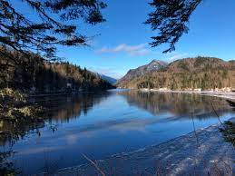

Protected areas play a crucial role in preserving biodiversity and maintaining the health of ecosystems,
but they face significant challenges in today's world. The encroachment of human activities, such as deforestation,poaching,
and urbanization, poses a serious threat to the integrity of these areas.
Climate change adds another layer of complexity, contributing to habitat loss and altering ecosystems.
Despite their importance, protected areas often grapple with insufficient funding and resources, making effective
management and enforcement challenging. However, their significance in mitigating the impacts of climate change,
safeguarding endangered species, and preserving natural habitats cannot be overstated. Protected areas act as essential
reservoirs of genetic diversity and serve as invaluable tools in the fight against the ongoing
global biodiversity crisis.
Moreover, they offer opportunities for scientific research, education, and recreation, contributing to
the overall well-being and quality of life for present and future generations. Recognizing and addressing the issues
facing protected areas is imperative to ensure the continued provision of these vital ecological services
and the sustainable coexistence of humans and the natural world.

"In the heart of protected areas lies the silent symphony of nature, where biodiversity thrives and
ecosystems harmonize. Preserving these sanctuaries is not just an environmental duty but a pledge to
safeguard the delicate dance of life for generations yet unborn."
Some hyperlinks of websites covering protected areas issues and strategies are given below-